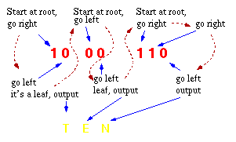

| Data Structures and Algorithms |
| 11 Huffman Encoding |
This problem is that of finding the minimum length bit string which can be used to encode a string of symbols. One application is text compression:
What's the smallest number of bits (hence the minimum size of file) we can use to store an arbitrary piece of text?Huffman's scheme uses a table of frequency of occurrence for each symbol (or character) in the input. This table may be derived from the input itself or from data which is representative of the input. For instance, the frequency of occurrence of letters in normal English might be derived from processing a large number of text documents and then used for encoding all text documents. We then need to assign a variable-length bit string to each character that unambiguously represents that character. This means that the encoding for each character must have a unique prefix. If the characters to be encoded are arranged in a binary tree:
Encoding tree for ETASNO |
An encoding for each character is found by following the
tree from the route to the character in the leaf:
the encoding is the string of symbols on each branch followed.
For example:
String Encoding
TEA 10 00 010
SEA 011 00 010
TEN 10 00 110
|
Notes:
A greedy approach places our n characters in n sub-trees and starts by combining the two least weight nodes into a tree which is assigned the sum of the two leaf node weights as the weight for its root node.
Operation of the Huffman algorithm.
The time complexity of the Huffman algorithm is O(nlogn). Using a heap to store the weight of each tree, each iteration requires O(logn) time to determine the cheapest weight and insert the new weight. There are O(n) iterations, one for each item.
"How do we decode a Huffman-encoded bit string? With these variable length strings, it's not possible to break up an encoded string of bits into characters!"
| The decoding procedure is deceptively simple. Starting with the first bit in the stream, one then uses successive bits from the stream to determine whether to go left or right in the decoding tree. When we reach a leaf of the tree, we've decoded a character, so we place that character onto the (uncompressed) output stream. The next bit in the input stream is the first bit of the next character. |  |
|
Huffman Encoding & Decoding Animation This animation was written by Woi Ang. |
|
Please email comments to: morris@ee.uwa.edu.au |
| Continue on to Fast Fourier Transforms | Back to the Table of Contents |